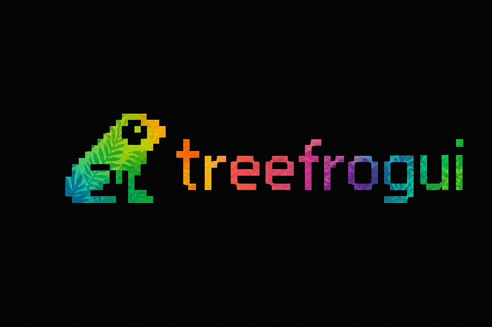

TREEFROGUI / INSTALLER
TreeFrogUI
Install a clean, ready-to-play SD card in a few clicks.

1 Device2 SD card3 ConfirmDone
1. Choose an action
Choose your device and release channel. A fresh install formats the card and restores the matching stock backup.
Checking available releases…